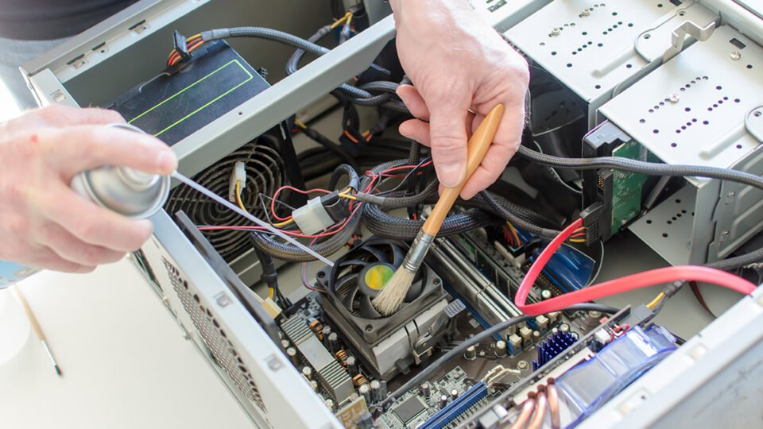

NOSSOS SERVIÇOS
Na Nodeshop, oferecemos uma ampla gama de serviços para ajudar você a tirar o máximo proveito de sua tecnologia. Nossa equipe de técnicos experientes está sempre disponível para ajudá-lo com seus problemas de informática, oferecendo suporte técnico rápido e eficiente. Alguns de nossos serviços mais populares incluem a montagem e configuração de computadores personalizados, a recuperação de dados perdidos, a remoção de vírus e malware, a instalação de software e a atualização de hardware. Além disso, podemos fornecer consultoria em tecnologia, para ajudá-lo a encontrar a melhor solução para sua necessidade. Também oferecemos serviços de manutenção e reparo de computadores, incluindo limpeza de hardware, atualização de software e reparo de danos físicos.

Se o seu computador precisar de conserto, você pode contar com nossa equipe para diagnosticar e resolver o problema de forma rápida e eficiente. Na Nodeshop, acreditamos que a tecnologia deve ser acessível e fácil de usar. É por isso que oferecemos serviços de treinamento em tecnologia, para ajudá-lo a aprender como usar seu computador e outros dispositivos com eficácia. Oferecemos treinamento em vários níveis, desde o básico até o avançado, para ajudá-lo a atingir seus objetivos de tecnologia. Se você precisar de ajuda com sua tecnologia, não hesite em entrar em contato com a Nodeshop. Estamos aqui para ajudar a tornar sua vida mais fácil e sua tecnologia mais eficaz.

A imagem ilustrativa mostra um técnico utilizando um multímetro da marca Nodeshop para realizar uma medição em um circuito elétrico. O técnico está segurando o multímetro com uma mão enquanto com a outra mão ele está ajustando os terminais de teste do aparelho no circuito. Ao fundo, é possível ver uma bancada de trabalho com diversas ferramentas e equipamentos, indicando que o técnico está realizando uma manutenção ou reparo. A imagem é clara e bem iluminada, permitindo ver com nitidez os detalhes do multímetro e do circuito elétrico. O uso do multímetro demonstra a importância de uma ferramenta de medição confiável e precisa em serviços elétricos e eletrônicos.